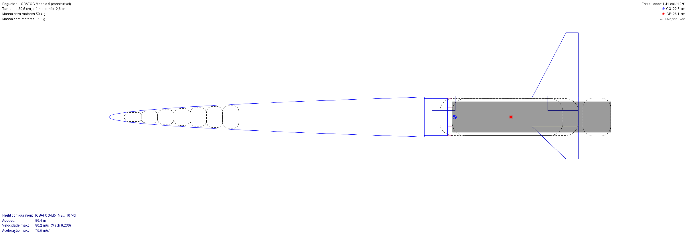
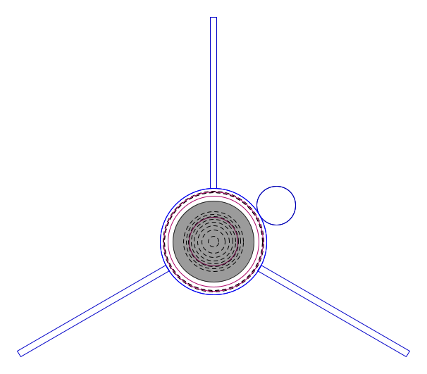
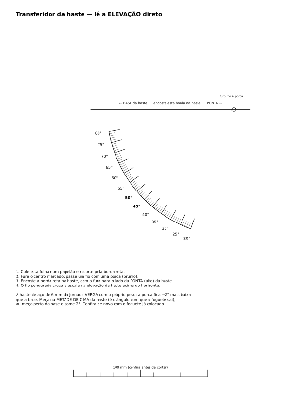
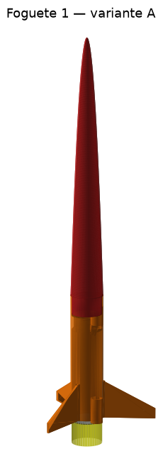
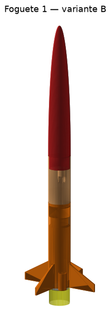
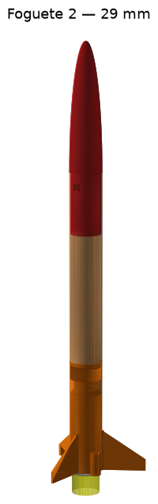
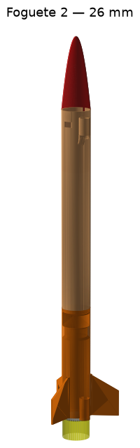
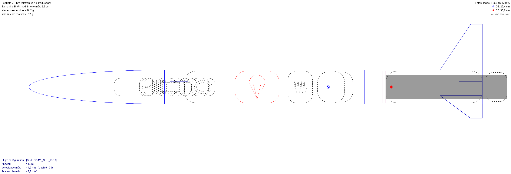
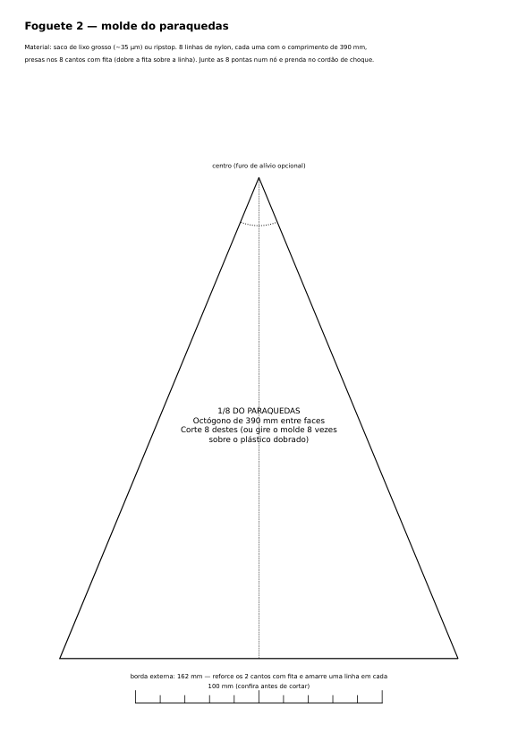

Dois foguetes com o motor sólido da OBAFOG
Um foguete de alcance para o Modelo 5 da Olimpíada Brasileira de Foguetes (100ª Jornada de Foguetes, dezembro de 2026) e um foguete livre com computador de voo e paraquedas. Os dois usam o mesmo motor oficial e foram pensados para serem impressos em 3D. Cada número desta página vem de simulação no OpenRocket, com o motor tratado pelo que se sabe dele e pelo que ainda falta medir.

Modelo 5: quem chega mais longe na horizontal
O Modelo 5 é o único da OBAFOG com propelente sólido. O foguete tem formato livre, mas o motor é obrigatório e não pode ser alterado em nada.
O que o regulamento exige
| Regra | Como o projeto atende |
|---|---|
| Só o motor descrito pela OBAFOG, sem alteração (p. 3) | atende O foguete foi projetado em volta dele |
| Qualquer material, menos metal (p. 2, p. 10) | atende PLA/PETG impresso; lastro de massa epóxi |
| Impressão 3D permitida (p. 2, p. 10) | atende |
| Duas guias que deslizam na vara (p. 11) | atende Guias de 7,65 mm para a haste de 6 mm |
| (CP − CG)/Dmax "igual ou ligeiramente maior que 1,0" (p. 9–10) | ambíguo Projeto com 1,41; "ligeiramente" não tem número |
| Lançamento oblíquo, maior alcance (p. 3) | atende Otimizado para alcance |
Regulamento da 20ª OBAFOG — Modelo 5 (17/02/2026). Análise completa, regra por regra, em regulamento/CONFORMIDADE.md.
A 100ª Jornada de Foguetes, Turma 15
- 07 a 10/12/2026, Barra do Piraí (RJ). É a única turma de 2026 com Modelo 5.
- As equipes não levam motor: ele é fabricado no evento com material da organização.
- A organização empresta uma haste de aço de 6 mm × 1,5 m, fincada no ângulo que a equipe escolher.
- O alcance é medido perpendicular à linha de lançamento: vento lateral não soma.
- Dois lançamentos, um por dia; vale o maior. Foguete não achado até 30 min depois da medição fica com zero.
Edital da 100ª Jornada de Foguetes, Turma 15 (08/06/2026), p. 13–15.
O motor oficial, tratado como caixa-preta
A OBA publica como fazer o motor, mas não publica a curva de empuxo. Os dados abaixo foram tirados dos vídeos oficiais (208, 210, 214–216). O impulso foi limitado por medições publicadas de motores parecidos.
O que se sabe
| Carcaça | cano PVC marrom soldável 20 mm × 100 mm |
| Propelente | 22 g, compactado, com furo central |
| Tubeira | cap do cano com furo de 7 mm, não colado |
| Tempo de queima | ~1,2 s (medido pela OBA em balança) |
| Histórico | mais de 1.200 acionamentos sem explosão |
| Impulso (não publicado) | nominal 7 N·s, faixa de projeto 5 a 11,5 N·s — motor classe C |
Referências publicadas: KNSu a frio com KNO₃ impuro (Revista Brasileira de Ensino de Física) deu Isp de ~39 s; KNSu prensado a 3–10 t com tubeira metálica (GFCS/UFPR), 63–82 s. O motor da OBA, compactado por queda de peso e com tubeira de plástico que erode, deve ficar abaixo dos dois: 7 N·s com 22 g de propelente equivale a Isp de 32 s.
Por onde passa o empuxo
O cap não é colado de propósito: ele funciona como válvula de alívio (vídeo 210). Por isso o foguete apoia o motor pela borda do cano, nunca pelo cap, e a fita crepe vai no cano.
Com 7 N·s, as 11 garrafas simuladas vão de 119 a 142 m, acima dos ~100 m que a OBA mostra (às vezes passam de 150 m). Ou o motor rende menos que isso, ou o OpenRocket subestima o arrasto de foguete artesanal (fita, coifa rombuda, aleta torta). Por isso o nominal ficou no lado baixo, em 7 N·s, e a faixa de projeto vai de 5 a 11,5 N·s.
Leve, fino e com a ogiva longa
Corpo de 26 mm impresso, ogiva longa com lastro de massa epóxi no bico e lata de aletas com a luva do motor e as duas guias numa peça só. Assim as guias saem alinhadas por construção.

Variante A e variante B
A ogiva da variante A precisa de 220 mm de altura de impressão. Para impressoras mais baixas, a variante B usa ogiva de 150 mm (165 mm de altura) e voa cerca de 20 m a menos.
Qual ângulo usar
Sem vento, o melhor é 44°. A curva é plana: entre 40° e 48° o alcance muda menos de 6 m. Por isso a flexão da haste de 6 mm, que verga uns 4 cm na ponta com o próprio peso (~2,5°), quase não pesa. Mesmo assim, o ângulo deve ser medido na metade de cima da haste. Para isso há um transferidor para imprimir: encostado na haste, o fio de prumo marca a elevação direto.

O pior dos 200 voos ainda passou de 220 m. Mas isto é simulação: até o primeiro voo de teste, o certo é esperar algo 10–30% abaixo, como indicou a checagem com as garrafas.
Todas as simulações guardadas no arquivo
Com 4 m/s de vento, a estabilidade mínima calculada cai para 0,8–1,0 cal: o vento cria ângulo de ataque, e o OpenRocket recalcula o CP com esse ângulo. A exigência de ≥ 1,0 cal da otimização vale para o voo sem vento.
Os foguetes em 3D
As mesmas peças que vão para a impressora, geradas pelo mesmo código e montadas na posição de voo (a malha daqui é mais leve, para carregar rápido). Arraste para girar e role para aproximar.
O visualizador 3D precisa de WebGL. Imagens das montagens:




Tudo imprime sem suporte
Peças em pé. O teto da luva é cônico a 45°, o anel dianteiro tem chanfro e há uma cunha sob a guia dianteira. Os bordos de fuga das aletas ficam deitados na mesa.
Massas vêm do próprio STL
Volume × densidade do PLA de cada peça, com o CG calculado do sólido, voltam para o OpenRocket como massa sobrescrita. Assim o foguete simulado pesa o que a peça impressa deve pesar; depois, a balança confere.
Gabaritos antes do foguete
Anéis de 20,3 a 20,9 mm testam o encaixe do cano de PVC, e guias de 6,8 a 8,0 mm testam a haste. Cada impressora fecha furos de um jeito.
Milhares de foguetes simulados, e o que eles ensinaram
Cada candidato foi montado de verdade no OpenRocket (ogiva, lata, aletas, luva, guias, cap e lastro), voou em vários cenários de motor e vento e recebeu uma nota de alcance robusto. A busca foi feita com Optuna em dez processos paralelos.
Restrições que todo projeto teve de cumprir
- Margem estática com o motor entre 1,2 e 2,5 cal; mínima em voo ≥ 1,0 cal (motor nominal, sem vento)
- Sair da vara a ≥ 11 m/s com o motor nominal e ≥ 7 m/s com o pior (progressivo de 5 N·s)
- Flutter da aleta (NACA TN 4197): velocidade crítica ≥ 1,5 × a máxima do voo mais rápido (11,5 N·s)
- Aleta imprimível sem suporte; comprimento ≤ 650 mm
- Na versão construível: raiz ≥ 28 mm, espessura ≥ 1,6 mm, envergadura ≤ 45 mm e margem ≥ 1,35 cal
Três lições
- Mais leve voa mais longe. O lastro entra só na medida da estabilidade.
- A ogiva longa ganha do tubo comprido. Ela dá braço de alavanca com menos área e menos massa.
- O OpenRocket não vê fragilidade. Solta, a busca afinou a aleta até 18 mm de raiz e 1,2 mm de espessura. A versão construível custa ~20 m de média e sobrevive ao manuseio e ao pouso.
Nesta tabela os três têm as massas estimadas pelo próprio OpenRocket, para comparar igual com igual. Com as massas tiradas do CAD, a variante A pesa 86,3 g, leva 12 g de lastro e faz 384 m no nominal.
Computador de voo e paraquedas, sem pólvora
Mesmo motor e voo quase vertical (87°). O barômetro detecta o apogeu; um micro servo solta a ogiva, e uma mola empurra o paraquedas para fora. A eletrônica fica no ombro da ogiva e serve também como o peso que dá estabilidade.

Recomendado para a primeira montagem: a versão de 29 mm, com mais espaço para a eletrônica e o paraquedas. A de 26 mm sobe ~20% mais, mas não consegue limitar o apogeu com lastro se o motor vier forte.
Altura, NOTAM e lastro
A norma BAR-2/2020 da Associação Brasileira de Minifoguetes orienta pedir NOTAM se o apogeu passar de 150 m em área rural. O motor real decide isso. Depois do teste estático, esta tabela diz quanta massa epóxi pôr no bico:
Paraquedas
Octógono de 390 mm em plástico de saco de lixo grosso (~35 µm), com 8 linhas de nylon. Foi dimensionado para descer a ~4,5 m/s: D = √(8mg / πρCdv²). O molde sai em A4, tamanho real.

Trava e ejeção
O braço do servo sai por uma fenda no ombro da ogiva e entra numa janela do tubo. Uma nervura garante o alinhamento. Travado, a mola fica comprimida entre o pistão e a antepara da lata. No apogeu, o servo recolhe o braço e a mola tira a ogiva. A própria janela serve de tomada de ar do barômetro.
ESP32-C3, barômetro e um filtro de Kalman
Ligação
Pinos de boot do ESP32-C3 (2, 8 e 9) evitados. O servo vai direto na bateria para o pico dele não derrubar os 3,3 V. Regra de segurança: chave desligada para plugar o USB, porque a LiPo está no pino 5V.
Máquina de estados do firmware
A lógica de voo (voo.h) não depende do Arduino: o mesmo arquivo compila no ESP32-C3 e no PC. Compila sem avisos (84% da flash, 30% da RAM).
Teste do firmware no computador (software-in-the-loop)
O firmware real rodou no PC contra 12 trajetórias do OpenRocket (6 motores × 2 ventos), com 2 níveis de ruído, com e sem picos de ±60 Pa, com e sem sensor congelado na propulsão e com 5 sementes: 480 casos. Nenhuma decolagem falsa em 60 s no chão com rajadas. O teste pegou dois erros da primeira versão (pouso não detectado e backup abrindo antes do apogeu), já corrigidos.
Como o projeto foi feito
- Regulamento primeiroCada regra rotulada (atende, proibido, ambíguo, precisa confirmar), com a página citada, antes de qualquer decisão de projeto.
- Motor como caixa-pretaDados dos vídeos oficiais, faixa de impulso limitada por dois trabalhos publicados e checada contra os voos da OBA. Doze curvas cobrem impulso e formato.
- OpenRocket 24.12 sem janelaOs foguetes são montados peça por peça pela API Java do próprio programa (Python + JPype), com o motor em configuração de voo própria.
- Otimização robustaNota de alcance médio e pior caso sobre motores e ventos, com restrições de estabilidade, saída da vara, flutter e imprimibilidade. Houve comparação com um projeto feito à mão.
- CAD em códigoSTL gerados das mesmas cotas (manifold3d), estanques. Massa e CG de cada peça voltam para o OpenRocket.
- Monte Carlo e tolerâncias200 voos com vento, rajada, motor e montagem sorteados, mais a sensibilidade a cada erro de fabricação.
- Firmware testado em simulaçãoA lógica de voo rodou no PC contra as trajetórias do OpenRocket, com ruído e falhas de sensor.
- Revisão crítica no fimProcurando erro de propósito. Ela achou aleta que precisaria de suporte na impressão e STL com defeito de malha, e os dois foram corrigidos antes de publicar.
Plano até a Jornada
Semana a semana
| Semana | O que fazer |
|---|---|
| 1 | O professor confirma a inscrição na Turma 15 (até 20/10) e manda as dúvidas técnicas à organização; imprimir os gabaritos de folga. |
| 2 | Fazer motores com o professor (vídeos 210–216); teste de resistência (queima presa, sem instrumento). |
| 3 | Teste estático de 3 a 5 motores → curva medida → simular de novo. |
| 4–5 | Voos de teste do Foguete 1 na escola, a 45° e 50°, comparando o real com o simulado. |
| 6 | Imprimir, pintar (fluorescente), pesar e conferir o CG de 3 a 4 foguetes definitivos. |
| 7–9 | Foguete 2: eletrônica na bancada, teste de ejeção, primeiro voo com o motor medido. |
| 10 | Checklist da Jornada e apresentação de 5 minutos (o edital pede slides com fotos dos lançamentos). |
Custo estimado
| Item | Custo |
|---|---|
| Foguete 1 (filamento + massa epóxi), por foguete; tinta e fita são divididas | R$ 6–9 |
| Bancada de teste estático | R$ 60–100 |
| Eletrônica do Foguete 2 | R$ 90–130 |
| Foguete 2 completo (sem motor) | R$ 110–150 |
Segurança
- Motor exatamente como nos vídeos, feito com o professor; nunca aumentar, trocar o cano ou colar o cap.
- Ignição elétrica a 25 m, protetor facial, luvas, público a pelo menos metade do apogeu (protocolo da OBA).
- Sequência da norma BAR-2/2020: teste de resistência → teste estático → voo.
- Foguete 2: acima de 150 m de apogeu, NOTAM ou campo liberado.
Tudo está no repositório
OpenRocket (.ork)
Impressão 3D (STL)
Fontes principais
- Regulamento da 20ª OBAFOG — Modelo 5 (2026) e edital da 100ª Jornada de Foguetes, Turma 15
- Vídeos oficiais da OBA: 208, 210, 214, 215, 216 e Segurança em primeiro lugar
- Minifoguete a propelente sólido: aspectos teóricos e propostas experimentais para o ensino de física (RBEF)
- Marchi (GFCS/UFPR), Propelente KNSu a frio para minifoguetes e Foltran et al., velocidade de queima do KNSu
- Norma BAR-2/2020 — Associação Brasileira de Minifoguetes
- Datasheet ESP32-C3 · Datasheet BMP280 · NACA TN 4197 (flutter de aleta)
- OpenRocket 24.12 (Barrowman estendido; documentação técnica de S. Niskanen)